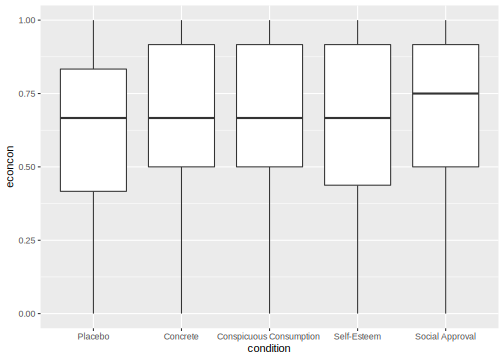
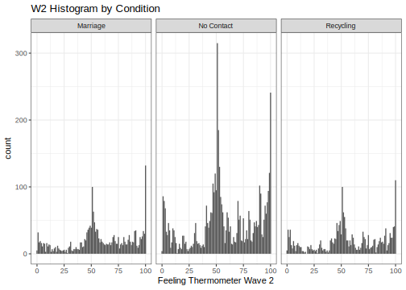
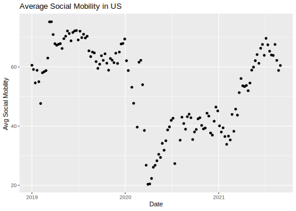
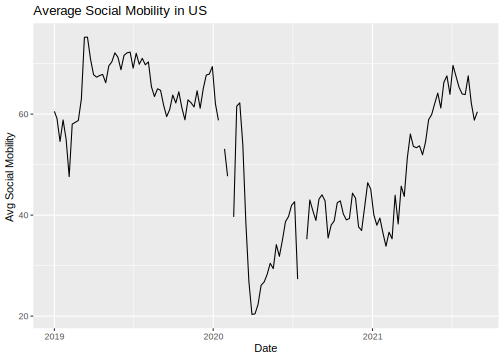

4.12 A note on ggplot
R has a number of open-source packages that people can use to expand the set of capabilities for visualization and analysis. These can be installed through RStudio. We will look at one of these packages: ggplot2.
Using ggplot will be extra-credit at this point in the course. We may return to it later in the semester as part of the main curriculum. Reviewing this section of the notes is optional.
The “gg” in ggplot2 stands for the “Grammar of Graphics.” This program provides another framework for creating figures in R. According to Hadley Wickham, “ggplot2 provides beautiful, hassle-free plots that take care of fiddly details like drawing legends.”
Practically speaking, ggplot() is another tool to plot the same types of figures we have been making in class. Some people prefer ggplot2 because they find the logic of building figures more intuitive using this framework and/or more aesthetically pleasing. However, both ggplot() and the plots we have been making in class can accomplish the same ultimate goals of data visualization– to communicate information transparently, quickly, accurately, simply, and beautifully. Which types of plots you may prefer is up to your own taste.
Think of packages like apps on a smartphone.
- If RStudio is our smartphone, we install a package like you install an app on the phone. You only have to do this once, though occasionally you may want or need to update the installation to a new version.
## Run this line in your R console
install.packages("ggplot2")- On a smartphone, every time you want to use an app after you have installed it, you have to open the app. Similarly, every time we want to open a package in RStudio, we have to open it by using the
library()command
## Add and run this line in your R script, above the code where you will use functions from the package
library(ggplot2)The main plotting function in ggplot2 is the ggplot() function. It will give you access to barplots, boxplots, scatterplots, histograms, etc.
- The syntax within this package is a little different from the base R plotting functions. We will investigate below. For now, here is an example of using
ggplotto create a boxplot using the experiment on social status from earlier in this section.
ggplot(data=status, mapping = aes(x=condition, y=econcon)) +
geom_boxplot()
The three primary components of a ggplot() are a dataframe (data =), a set of mapping aesthetics (aes()), and geoms (e.g., geom boxplot, geom bar, geom point, geom line, etc.).
- The function
ggplot()first takes a dataframe that includes the values you would like to plot (e.g.,data = status). - The aesthetics then include the variable names that you want to plot on the x and y axis (e.g.,
aes(x=condition, y=econcon))- Additional mapping aesthetics can be specified. For example, a third variable (or a repeat of a previous variable) can also be specified (e.g.,
fill =,colour =,shape =), which acts as a grouping variable. If this is specified,ggplot()will create a corresponding legend for the plot and will color/make different shapes for different groups within this third variable (See the boxplot below for an example of grouping by condition).
- Additional mapping aesthetics can be specified. For example, a third variable (or a repeat of a previous variable) can also be specified (e.g.,
- After closing out the first
ggplot()parentheses, you then annotate the plot by adding (+) a geometric layer. This is essentially where you specify the type of plot (though it is possible to have multiple geometric layers). - Just like with the other plotting functions in R, you can also specify a number of other arguments to make your plot more informative and aesthetically pleasing. Here, you do this by adding (
+) additional arguments. See examples below (e.g.,ggtitle,xlab,ylabfor titles,ylimfor y-axis limits, etc.) - Likewise, just like with the other plotting functions, you can save your plots as a pdf or png. To do so here, you include the line
ggsave()just below your plot.
There are many more possibilities for plotting with ggplot(), but these should get you started. For additional resources on all that is gg, I recommend the R Graphics Cookbook.
Here is a second version of the boxplot with more aesthetics specified.
- We will color in the boxes based on the collapsed condition variable.
ggplot(data=status, mapping = aes(x=condition, y=econcon, fill=conditionnew)) +
## Specifies plot type. E.g., also have geom_point(), geom_bar()
geom_boxplot()+
## Note many arguments are similar to other R functions but the syntax is a little different
ggtitle("Economic Views by Experimental Condition")+
ylab("Economic Views")+
xlab("Experimental Condition")+
ylim(0,1)+
## Changes the overall theme (i.e., color scheme, borders, etc.)
theme_bw()+
theme(legend.position="bottom")
ggsave("myboxplot.pdf", width=7, height=5)Here is an example of a histogram from the application on views toward gay couples.
ggplot(controlonly, aes(x=therm1)) +
geom_histogram(binwidth = 1) +
ggtitle("W1 Histogram") +
theme_minimal()
Instead of displaying multiple categories through different shapes or colors, we could also create multiple mini plots instead. This is done through facet. Let’s look at a histogram for each condition for the thermometers in wave 2.
ggplot(marriage1, aes(x=therm2)) +
geom_histogram(binwidth = 1) +
ggtitle("W2 Histogram by Condition") +
xlab("Feeling Thermometer Wave 2")+
theme_bw()+
facet_wrap(~treatmentnew)## Warning: Removed 1042 rows containing non-finite values (stat_bin).
We can similarly create a scatter and line plot. Let’s use the social mobility data. Here we see geom_point and geom_line.
## Scatterplot
ggplot(covidsub, aes(x=Dates, y=avg_USA)) +
geom_point() +
ggtitle("Average Social Mobility in US") +
xlab("Date")+
ylab("Avg Social Mobility")## Warning: Removed 4 rows containing missing values (geom_point).
## Line plot
ggplot(covidsub, aes(x=Dates, y=avg_USA)) +
geom_line() +
ggtitle("Average Social Mobility in US") +
xlab("Date")+
ylab("Avg Social Mobility")